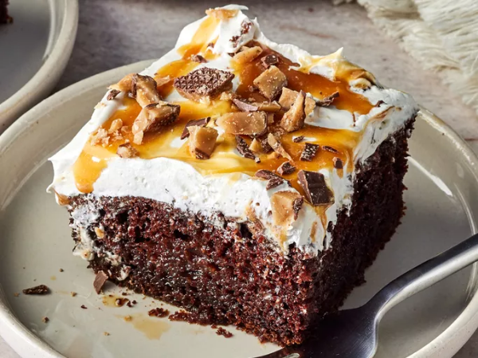

Better Than Sex Cake

Description
A better than sex cake made with rich chocolate cake, caramel, toffee, and whipped topping..
This aptly named Better Than Sex Cake — complete with a sweetened condensed milk-caramel sauce, chocolate-covered toffee, and whipped topping — is as indulgent as it gets.
Ingredients
- Cake mix
- Water and oil
- Eggs
- Sweetened condensed milk
- Caramel
- Chocolate-covered toffee
- Frozen whipped topping
Steps
- Make the cake batter and pour it into the prepared pan.
- Bake the cake until a toothpick comes out clean, then cut slits across the top of the cake.
- Combine the condensed milk and caramel on the stove, then pour over the baked cake.
- Top the cooled cake with the whipped topping. Drizzle with caramel and chill.